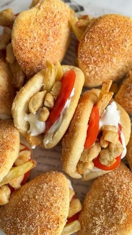

Moja beleška
SačuvanoSastojci
- Sastojci za testo
- Za posipanje
- Sastojci za nadev
- Sastojci za beli sos
Priprema
Priprema testa: 1. U posudu staviti vodu, mleko, med i kvasac, pa dobro promešati. 2. Dodati jaje, ulje i brašno, zatim umešati omekšali puter i so, pa umesiti glatko testo. 3. Mesiti testo oko 6 minuta. 4. Pokriti i ostaviti da naraste dok ne udvostruči zapreminu. 6. Premazati mlekom i posuti mešavinom parmezana, luka u prahu i soli. 7. Ostaviti da naraste još 35 minuta. 8. Peći u prethodno zagrejanoj rerni na 180°C oko 15 minuta, pazeći da se ne prepeče. Priprema nadeva: 1. Marinirati piletinu sa svim začinima i maslinovim uljem. 2. Pržiti u tiganju dok ne postane zlatno-smeđa i sočna. Finalna priprema: 1. Pečene lepinje raseći, premazati sosom i napuniti piletinom. 2. Dodati seckanu salatu (ja sam koristila paradajz). Možete uz to poslužiti i pomfrit ili pečene krompiriće.
Originalni opis sa Instagrama
Dok pričam ovu priču, u videu se priprema nešto što će sigurno obradovati sve ljubitelje ukusnog peciva – meke, mirisne lepinjice punjene sočnom piletinom. A evo i recepta, da ih i vi možete napraviti kod kuće! Lepinjice punjene piletinom 👌🏼 Sastojci za testo: • 75 g vode • 200 g mleka • 15 g meda • 1 suvi kvasac • 1 jaje • 30 ml ulja • 600 g brašna • Malo soli • 25 g omekšalog putera Za posipanje: • 40 g parmezana • 1 ravna kašičica luka u prahu • Malo soli Priprema testa: 1. U posudu staviti vodu, mleko, med i kvasac, pa dobro promešati. 2. Dodati jaje, ulje i brašno, zatim umešati omekšali puter i so, pa umesiti glatko testo. 3. Mesiti testo oko 6 minuta. 4. Pokriti i ostaviti da naraste dok ne udvostruči zapreminu. 5. Oblikovati kuglice od 50 g, rastanjiti ih u krug i preklopiti na pola. 6. Premazati mlekom i posuti mešavinom parmezana, luka u prahu i soli. 7. Ostaviti da naraste još 35 minuta. 8. Peći u prethodno zagrejanoj rerni na 180°C oko 15 minuta, pazeći da se ne prepeče. Sastojci za nadev: • 400 g pilećeg mesa • So • 1 kašičica belog luka u prahu • Malo začina za piletinu • 20 g maslinovog ulja Priprema nadeva: 1. Marinirati piletinu sa svim začinima i maslinovim uljem. 2. Pržiti u tiganju dok ne postane zlatno-smeđa i sočna. Sastojci za beli sos: • 5 kašika majoneza • 2 pune kašike kisele pavlake • Malo luka u prahu • So i malo soka od limuna Finalna priprema: 1. Pečene lepinje raseći, premazati sosom i napuniti piletinom. 2. Dodati seckanu salatu (ja sam koristila paradajz). Možete uz to poslužiti i pomfrit ili pečene krompiriće. Prijatno! 🌸 • • • #lepinjice #fingerfood #ukusnahrana #recepti #storytime